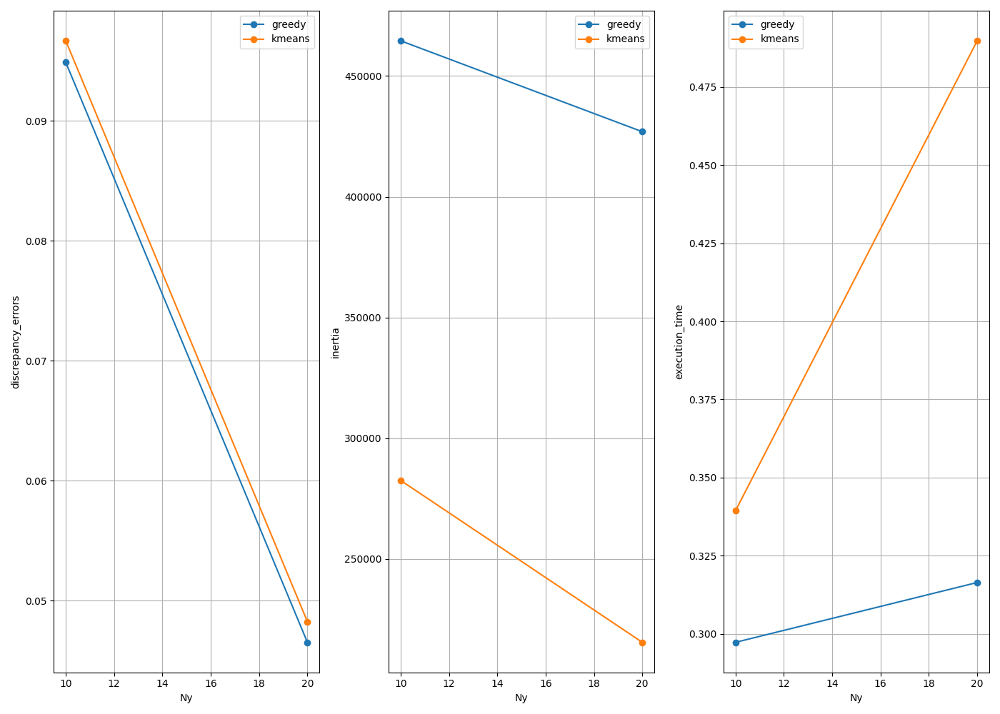
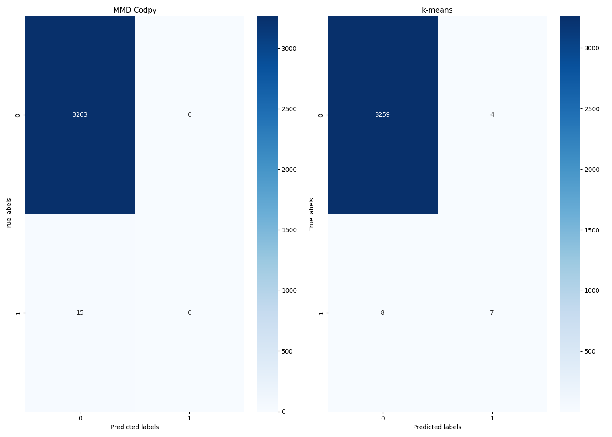

Note
Go to the end to download the full example code.
6.4 Unsupervised learning: Clustering - Fraud detection
We show how to reproduce the results of the chapter 6.3.3 - Credit card fraud dectection. We will compare the codpy MMD minimization-based algorithm with scikit learn k-means in an unsupervised setting. The goal is to show the different scores as we increase the number of centroids Ny used for clustering.
- Necessary Imports
import sys
import os
import time
import seaborn as sns
import pandas as pd
from sklearn.preprocessing import RobustScaler
from sklearn.model_selection import train_test_split
import kagglehub
import matplotlib.pyplot as plt
import numpy as np
import pandas as pd
from codpy.clustering import GreedySearch, SharpDiscrepancy
from codpy.kernel import *
from codpy.data_processing import hot_encoder
from ch6_Clustering import *
from sklearn.cluster import KMeans
try:
current_dir = os.path.dirname(__file__)
data_dir = os.path.join(current_dir, "data")
except NameError:
current_dir = os.getcwd()
data_dir = os.path.join(current_dir, "data")
curr_f = os.path.join(os.getcwd(), "codpybook", "utils")
sys.path.insert(0, curr_f)
- CreditCardFraud Data Preparation
We get the data from Kagglehub. We scale the values using RobustScaler, which is robust to outliers. This is usefull for the CreditCardFraud dataset, which contains a very small percentage of fraudulent transactions.
def get_dataset():
path = kagglehub.dataset_download("mlg-ulb/creditcardfraud")
print("Path to dataset files:", path)
data = pd.read_csv(os.path.join(path, "creditcard.csv"))
return data
def prep_data(x,n):
rob_scaler = RobustScaler()
x["Time"] = rob_scaler.fit_transform(x['Time'].values.reshape(-1,1))
x["Amount"] = rob_scaler.fit_transform(x['Amount'].values.reshape(-1,1))
x = x[:n]
frauds = x[x["Class"]==1]
no_frauds = x[x["Class"]==0]
train_size = 0.8
x_train_fraud, z_test_fraud= train_test_split(frauds, train_size=train_size, random_state=42)
x, z = train_test_split(no_frauds, train_size=train_size, random_state=42)
x = pd.concat([x,x_train_fraud])
z = pd.concat([z,z_test_fraud])
fx = x['Class']
x = x.drop(['Class'],axis=1)
fz = z['Class']
z = z.drop(['Class'],axis=1)
fx, fz = (
hot_encoder(pd.DataFrame(data=fx.values), cat_cols_include=[0], sort_columns=True),
hot_encoder(pd.DataFrame(data=fz.values), cat_cols_include=[0], sort_columns=True),
)
x, fx, z, fz = (x.to_numpy(), fx.to_numpy(), z.to_numpy(), fz.to_numpy())
return x,fx,z,fz
def fraud_generator(n):
return prep_data(get_dataset(),n)
- Running the Experiment
This section runs the experiment to compare K-means and CodPy clustering. We use the models defined in 6.3 Unsupervised learning: Clustering - MNIST
def one_experiment(X, fx, Ny, get_predictor, z, fz):
def get_score(X, cluster_centers, predictor):
inertia = compute_inertia(X, cluster_centers)
mmd = compute_mmd(X, cluster_centers)
f_z = predictor(z)
f_z = f_z.argmax(1)
ground_truth = fz.argmax(axis=-1)
out = confusion_matrix(ground_truth, f_z)
return inertia, mmd, out
elapsed_time = time.time()
cluster_centers, predictor = get_predictor(X, fx, Ny)
elapsed_time = time.time() - elapsed_time
inertia, mmd, conf_matrix = get_score(X, cluster_centers, predictor)
return inertia, mmd, elapsed_time, conf_matrix
def run_experiment(data_generator, Nx, Ny_values, get_predictors, labels, file_name=None):
results = []
conf_matrices = {}
for Ny in Ny_values:
N_MNIST_pics = Nx
x, fx, z, fz = data_generator(N_MNIST_pics)
for get_predictor, label in zip(get_predictors, labels):
inertia, mmd, elapsed_time, conf_matrix = one_experiment(x, fx, Ny, get_predictor, z, fz)
print(
"Method:",label,
"N_partition:",Ny,
" inertia:",inertia,
" mmd:",mmd,
" time:",elapsed_time,
)
results.append(
{
"Method": label,
"Nx": Nx,
"Ny": Ny,
"Execution Time (s)": elapsed_time,
"inertia": inertia,
"mmd": mmd,
}
)
conf_matrices[label] = conf_matrix
out = pd.DataFrame(results)
print(out)
if file_name is not None:
out.to_csv(file_name, index=False)
conf_matrices = [{"data": conf_mat} for label, conf_mat in conf_matrices.items()]
return results, conf_matrices
- Plotting
This section formats data plots the different experiments on a figure.
def plot_experiment(inputs):
"""
This is mainly boilerplate formatting the data for plotting.
"""
results = [{"data": {}} for _ in range(3)]
for res in inputs:
ny = res["Ny"]
method = res["Method"]
t = res["Execution Time (s)"]
inertia = res["inertia"]
mmd = res["mmd"]
results[0]["data"].setdefault(ny, {})[method] = mmd
results[1]["data"].setdefault(ny, {})[method] = inertia
results[2]["data"].setdefault(ny, {})[method] = t
def plot_one(inputs):
results = inputs["data"]
ax = inputs["ax"]
legend = inputs["legend"]
for model_name in next(iter(results.values())).keys():
x_vals = sorted(results.keys())
y_vals = [results[x][model_name] for x in x_vals]
ax.plot(x_vals, y_vals, marker='o', label=model_name)
ax.set_xlabel('Ny')
ax.set_ylabel(legend)
ax.legend()
ax.grid(True)
return ax
multi_plot(
results,
plot_one,
mp_nrows=1,
mp_ncols=4,
mp_figsize=(14, 10),
legends=["discrepancy_errors", "inertia", "execution_time"],
)
def plot_conf_matrix(inputs):
conf_matrix = inputs["data"]
ax = inputs["ax"]
legend = inputs["legend"]
sns.heatmap(conf_matrix, annot=True, fmt='d', cmap='Blues', ax=ax)
ax.set_xlabel('Predicted labels')
ax.set_ylabel('True labels')
ax.set_title(legend)
return ax
if __name__ == "__main__":
get_predictors = [
lambda X, fx, N: codpy_clustering(X, fx, N),
lambda X, fx, N: kmeans_clustering(X, fx, N),
]
labels = ["greedy", "kmeans"]
# Run the experiment
Nxs, Nys = 4096*4, [10, 20]
results, conf_matrices = run_experiment(fraud_generator, Nxs, Nys, get_predictors, labels)
plot_experiment(results)
plt.show()
multi_plot(conf_matrices, plot_conf_matrix, mp_nrows=1, mp_ncols=2, mp_figsize=(14, 10), legends=["MMD Codpy", "k-means"])
plt.show()
- 
- 
Path to dataset files: C:\Users\geoff\.cache\kagglehub\datasets\mlg-ulb\creditcardfraud\versions\3
Method: greedy N_partition: 10 inertia: 464594.9838624175 mmd: 0.0948630994595838 time: 0.2972526550292969
Method: kmeans N_partition: 10 inertia: 282535.826614884 mmd: 0.09666078993090986 time: 0.33942198753356934
Path to dataset files: C:\Users\geoff\.cache\kagglehub\datasets\mlg-ulb\creditcardfraud\versions\3
Method: greedy N_partition: 20 inertia: 426947.06153945025 mmd: 0.04651846029808986 time: 0.31640195846557617
Method: kmeans N_partition: 20 inertia: 215497.90363048157 mmd: 0.048244749837085515 time: 0.4898262023925781
Method Nx Ny Execution Time (s) inertia mmd
0 greedy 16384 10 0.297253 464594.983862 0.094863
1 kmeans 16384 10 0.339422 282535.826615 0.096661
2 greedy 16384 20 0.316402 426947.061539 0.046518
3 kmeans 16384 20 0.489826 215497.903630 0.048245
Total running time of the script: (0 minutes 6.787 seconds)